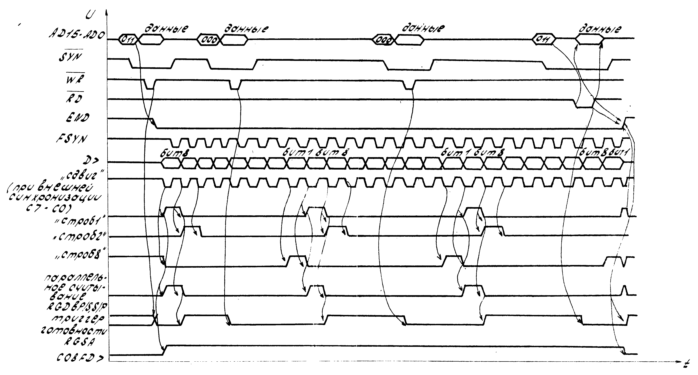
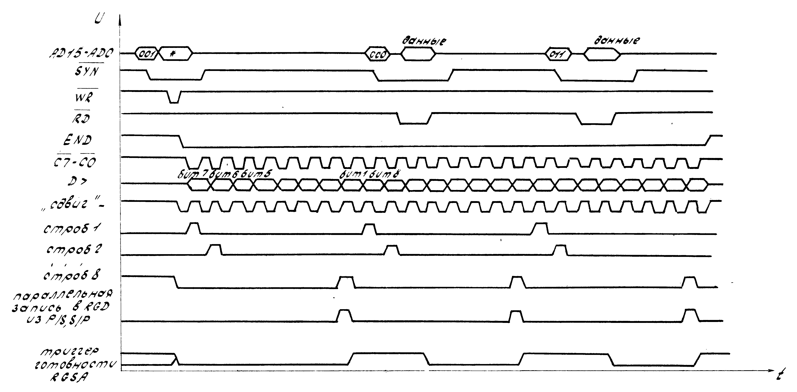
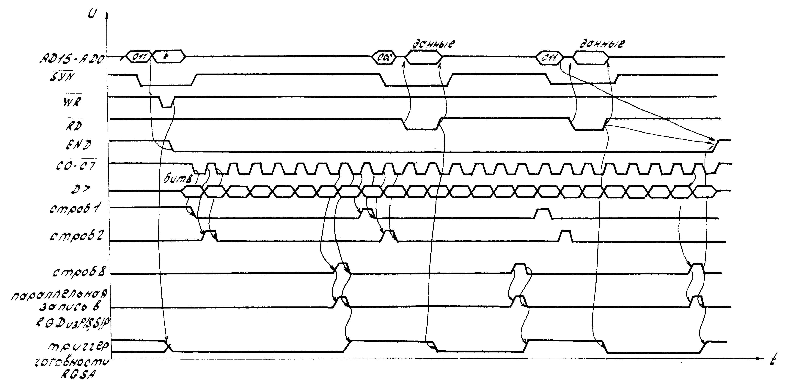
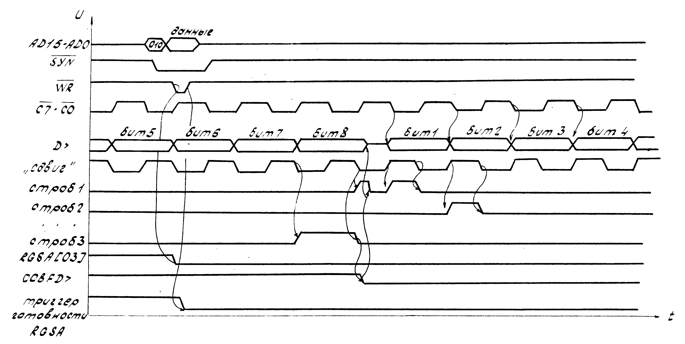
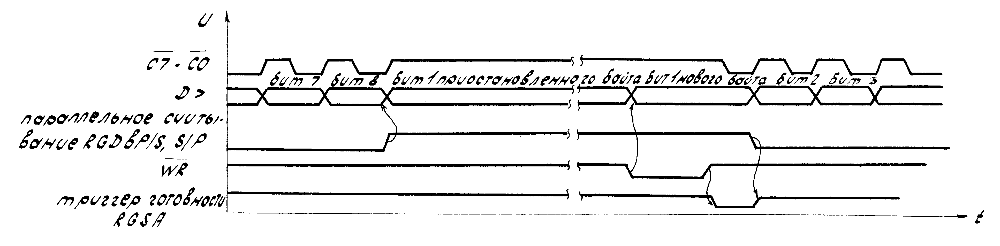
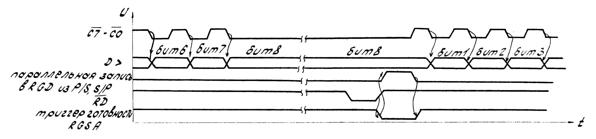
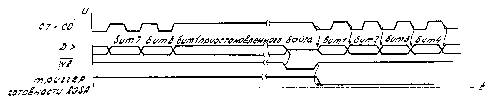

1.1. Микросхема КА1835ВГ4 - контроллер внешних устройств - предназначена для использования в персональной микро-ЭВМ, для группового управления периферийными устройствами персональной микро-ЭВМ и организации обмена между центральным процессором и периферийными устройствами персональной микро-ЭВМ.
1.2. Микросхема характеризуется следующими параметрами:
| Количество каналов обмена: | |
| параллельный | 1 |
| последовательный | 8 |
| Скорость обмена информации с внешними устройствами (по последовательному каналу) | 500 Кбод |
| Разрядность адреса | 16 |
| Разрядность данных | 16 |
| Разрядность команды | 3 |
| Количество режимов работы | 4 |
| Потребляемая мощность не более | 0,11 мВт |
2.1. Назначение и нумерация выводов микросхемы приведены в табл. 1.
Структурная схема микросхемы приведена на рис. 1.
Условные графическое обозначение микросхемы приведено на рис. 2.
2.2. Микросхема состоит из следующих блоков:
1) Восьмиразрядного буфера параллельного ввода-вывода (BFIO);
2) Восьмиразрядного регистра данных (RGD);
3) Трехразрядного регистра команд (RGINS);
4) Селектора адреса (SLA);
5) Устройства управления (CO);
6) Устройства логики прерываний (LINR);
7) Восьмиразрядного параллельно-последовательного преобразователя (P/S, S/P);
8) Трехразрядного счётчика битов с дешифратором (CIDC);
9) Буфера последовательных данных (BFD>);
10) Восьмиразрядного регистра фиксированных запросов (RGRQ);
11) Двенадцатиразрядного регистра коэффициента деления (RGDIV);
12) Двенадцатиразрядного делителя опорной синхронизирующей частоты (DIVSYN);
13) Устройства синхронизации последовательного обмена (SYNIOS);
14) Одиннадцатиразрядного регистра состояния (RGSA);
15) Дешифратора адреса внешнего устройства (DCA);
16) Буфера стробов и запросов от внешних устройств (BFCRQ).
2.2.1. Буфер параллельного ввода-вывода (BFIO) предназначен для организации направления передачи информации (из микросхемы в МПИ и из МПИ в микросхему).
2.2.3. Регистр данных (RGD) служит буфером при обмене информацией между МПИ по ГОСТ 26765.51-86 и последовательным интерфейсом микросхемы. Регистр данных программно доступен для центрального процессора.
2.2.4. Регистр команд (RGINS) предназначен для хранения трехразрядной комады (разряды AD3-AD1) для устройства управления. Коды и назначение команд приведены в табл. 2.
2.2.5. Селектор адреса активизирует микросхему в соответствии с адресом, поступающим по шине AD8-AD15. Формат адреса приведен в табл. 3.
2.2.6. Устройство управления (CO) дешифрирует команду, поступающую из регистра команд, и выдает управляющие сигналы для работы микросхемы.
2.2.7. Устройство логики прерываний (LINR) фиксирует прерывание и выдает адрес вектора прерываний на шину AD, а также организует приоритет источников прерываний в следующем порядке (приоритет убывает):
1) таймер или любое внешнее устройство с наивысшим приоритетом по прерыванию;
2) регистр данных;
3) внешние устройства.
Формат адрес вектора прерываний приведены в табл. 4.
2.2.8. Параллельно последовательный преобразователь (P/S, S/P) предназначен для коммутации поочередно последовательной шины данных и разрядов параллельного регистра данных.
2.2.9. Счётчик битов с дешифратором (CTDC) служит:
1) для отсчёта количества переданных или принятых битов;
2) для коммутации соответствующего бита при параллельно-последовательном и последовательно-параллельном преобразовании данных;
3) для выдачи сигналов параллельной записи в регистр данных из параллельно-последовательного преобразователя или параллельной выдачи из регистра данных в параллельно-последовательный преобразователь информации, вводимой в МПИ или выводимой через BFD> во внешнее устройство.
2.2.10. Буфер последовательных данных (BFD>) предназначен для организации обмена по последовательному интерфейсу между микросхемой и внешним устройством.
2.2.11. Регистр фиксированных запросов (RGRQ) предназначен для фиксации запросов прерываний, приходящих от внешних устройств.
Номер установленного бита этого регистра соответствует физическому адресу внешнего устройства. Регистр программно доступен для считывания центральным процессором. Формат регистра фиксированных запросов приведен в табл. 5.
Запрос на прерывание в регистре фиксированных запросов фиксируется независимо от наличия маски прерывания от внешнего устройства.
Сброс бита регистра фиксированных запросов осуществляется при предоставлении обмена с соответствующим внешним устройством. Общий сброс фиксированных запросов производится по сигналу SR "Вход установки в исходное состояние".
Запрос на прерывание от внешних устройств, поступающий в устройство логики прерывания, формируется один раз, независимо от количества прерываний зафиксированных в регистре фиксированных запросов.
2.2.12. Регистр коэффициента деления (RGDIV) принимает двенадцатиразрядный код из МПИ по шине AD11-AD00 и предназначен для фиксации кода, определяющего частоту обмена с внешним устройством в режиме внутренней синхронизации.
2.2.13. Делитель опорной синхронизирующей частоты (DIVSYN) делит опорную частоту обмена в соответствии с кодом, записанным в регистр коэффициента деления.
Частота обмена на выходе буфера синхросигнала вычисляется по формуле:
Ф = F / (2 * N)
где
F - опорная частота
N - число занесённое в регистр коэффициента деления (система счисления десятичная)
2.2.14. Устройство синхронизации последовательного обмена (SYNIOS) предназначено для синхронизации данных по последовательному интерфейсу в режиме внутренней синхронизации микросхемы с программно заданной частотой.
2.2.15. Регистр состояния (RGSA) хранит информацию о режимах работы микросхемы и о состоянии внутренних триггеров и линий последовательного интерфейса микросхемы.
Регистр состояния состоит из:
1) триггера вида синхронизации последовательного обмена, управляющего коммутацией синхронизирующей частоты и устанавливающей на выходе COBFC напряжение высокого уровня при внутренней синхронизации (вход/выход RA работает как вход) и напряжение низкого уровня при внешней синхронизации (вход/выход RA работает как выход);
2) трёх триггеров масок прерываний;
3) триггера, указывающего направление передачи данных;
4) трёх триггеров, указывающих номер внешнего устройства, с которым предполагается последовательный обмен;
5) триггера готовности, свидетельствующего о готовности к обмену регистра данных.
Регистр состояния программно доступен. Формат регистра состояния при записи приведен в табл. 6.
Код адреса внешних устройств приведен в табл. 7.
Формат регистра состояния при чтении приведен в табл. 8.
Прерывание считается замаскированным, если бит маски прерывания регистра состояния установлен в состояние "логической единицы".
При наличии низкого уровня напряжения на входе SR устанавливается маска прерывания от таймера и внешних устройств.
Во время записи в регистр состояния бит маски прерывания от регистра данных удерживается в состоянии "логической единицы".
2.2.16. Дешифратор адреса внешнего устройства (DCA) дешифрует адрес внешнего устройства и определяет внешнее устройство, с которым осуществляется обмен.
2.2.17. Буфер стробов и запросов от внешних устройств (BFCRQ) предназначен для синхронизации обмена информацией с внешним устройством и приёма запросов на прерывание от внешнего устройства.
2.3. Микросхема выполняет следующие функции:
1) подключение до восьми внешних устройств портативной ЭВМ посредством последовательного интерфейса, в состав которого входят:
"строб/запрос на прерывание" к каждому внешнему устройству (C7-C0);
"последовательные данные" (D>);
"конец последовательного обмена" (END);
2) подключение к центральному процессору посредством интерфейса МПИ;
3) параллельный обмен информацией с центральным процессором через линии МПИ;
4) последовательный обмен данными с одним из восьми подключенных внешних устройств;
5) программное задание адреса внешнего устройства;
6) программное задание режима работы микросхемы с внешним устройством:
внутренняя и внешняя синхронизация последовательного обмена;
направление последовательного обмена;
частота последовательного обмена;
7) фиксация запросов на прерывание от внешнего устройства;
8) приоритетность прерываний от трёх источников прерываний и обслуживание прерываний по протоколу МПИ;
9) выработку сигналов выборки внутреннего регистра любого из внешних устройств, подключенных непосредственно к МПИ;
10) изменение направления передачи последовательных данных без остановки последовательного обмена;
11) приостановку синхрогенератора при внутренней синхронизации последовательного обмена, если центральный процессор не успел передать или принять очередной байт данных;
12) одновременное подключение к МПИ до четырёх микросхем.
Все функции микросхема выполняет под управлением внешних сигналов интерфейса МПИ. К одному МПИ может быть подключено одновременно до четырёх микросхем.
Микросхема предусматривает возможность подключения внешних устройств. Внешнее устройство может инициировать обмен информацией установкой напряжения низкого уровня на выходе END, при этом синхронизация обмена может осуществляться как от микросхемы, так и от внешнего устройства, подключенного через последовательный интерфейс.
Вид синхронизации и направление обмена информацией, определяется значением соответствующих триггеров регистра состояний.
2.4. Начальная установка микросхемы производится подачей низкого уровня напряжения на вход SR.
При этом сбрасывается счётчик битов, разряды [06,04] регистра состояния, регистр команд, устройство логики прерываний и на входах D>, END, RA, C0-C7 устанавливается высокоимпедансное состояние.
2.5. Микросхема работает в следующих режимах:
1) передачи информации из МПИ во внешнее устройство;
2) передачи информации от внешнего устройства в МПИ;
3) обмена информацией с изменением направления передачи;
4) приостановки внутренней синхронизации.
В начале любого режима работы микросхемы должны быть определены регистр состояния и регистр коэффициента деления опорной частоты, если предполагается обмен с внутренней синхронизацией.
При передаче данных из МПИ во внешнее устройство старт обмена совмещен с занесением информации в регистр данных.
Временная диаграмма работы микросхемы при передаче информации из МПИ во внешнее устройство приведена на рис. 3.
По команде AD[03-01] = 011 загружается первый байт информации в регистр данных и выставляется сигнал низкого уровня напряжения на входе END, который запускает генератор синхросигналов, поступающих на вход FSYN.
По первому такту сигнала "сдвиг" осуществляется запись данных из регистра данных в параллельно-последовательный преобразователь, одновременно выдается первый бит информации в последовательный канал D>, сопровождаемый сигналом (C7-C0), запаздывающим по фазе 90° относительно сигнала "сдвиг".
По фронту сигнала "строб 1", коммутирующего первый бит, вырабатывается запрос прерывания от регистра данных и устанавливается в состояние "логического нуля" триггер готовности регистра состояния.
Если прерывание от готовности регистра данных не замаскировано, происходит обработка прерывания по стандартной процедуре. Во время передачи оставшихся битов первого байта информации МПИ должен загрузить в регистр данных второй байт и т.д.
Чтобы закончить обмен, по предпоследнему запросу от регистра данных по команде AD[03-01] = 011, устанавливается сигнал высокого уровня напряжения на входе END. Последний запрос от регистра данных служит сообщением МПИ об окончании обмена с внешним устройством (на входе END устанавливается высокий уровень напряжения).
При передачи информации МПИ - внешнее устройство на выходе COBFD> устанавливается напряжение высокого уровня, начиная с момента выдачи первого бита.
Временная диаграмма работы микросхемы при передаче данных от внешнего устройства (внутренняя синхронизация) приведена на рис. 4.
Временная диаграмма работы микросхемы при передаче данных от внешнего устройства (внешняя синхронизация) приведена на рис. 5.
По команде AD[03-01] = 011 микросхема выставляет сигнал низкого уровня напряжения на входе END, запускающий генератор синхросигналов, поступающих на вход FSYN.
Информация через буфер последовательных данных поступает на параллельно-последовательный преобразователь. По восьмому синхросигналу (строб 8) происходит параллельная запись информации в регистр данных из параллельно-последовательного преобразователя.
По фронту спада сигнала (строб 8) регистр данных выставляет запрос на прерывание.
Во время приёма второго байта информации от внешнего устройства в параллельно-последовательный преобразователь происходит обслуживание прерывания от регистра данных и ввод первого байта информации из регистра данных в МПИ по команде AD[03-01] = 000.
По команде AD[03-01] = 011 принимается предпоследний байт и устанавливается высокий уровень напряжения на выходе END.
По команде AD[03-01] = 000 принимается последний байт.
Последний запрос на прерывание от регистра данных служит сообщением МПИ об окончании обмена с внешним устройством (на входе END устанавливается высокий уровень напряжения). При передаче информации от внешнего устройства в МПИ на выходе COBFD> устанавливается низкий уровень напряжения.
Временная диаграмма работы микросхемы при изменении направления обмена приведена на рис. 6.
Такой режим может возникнуть, если в качестве внешнего устройства используется сменный модуль памяти, при выполнении команды считывания.
При этом необходимо вначале передать устройству код команды, а затем принять от него массив данных.
При переключении направления передачи микросхема работает следующим образом. При передаче последнего байта кода команды по запросу на прерывания от регистра данных происходит обслуживание регистра состояния и устанавливается направление передачи данных "внешнее устройство - МПИ".
По окончании пердачи байта происходит переключение буфера параллельного ввода-вывода на приём данных и на входе COBFD> устанавливается высокий уровень напряжения. Далее обмен с внешним устройством происходит как в режиме при передаче информации от внешнего устройства в МПИ.
Временные диаграммы работы микросхемы при приостановке внутренней синхронизации приведены на рис. 7, рис. 8, рис. 9.
Такой режим работы устанавливается, если регистр данных не успел обслужиться, а передача последовательных данных не оставлена по команде "последовательного стоп-обмена". В этом случае устройство синхронизации последовательного обмена осуществляет приостановку внутренней синхронизации.
Запуск и синхронизация происходит по окончании записи или считывания регистра данных или установлением триггера направления передачи данных в регистре состояния в состояние "логического нуля".
Обмен информации осуществляется либо путем запроса и обслуживания прерывания от регистра данных, либо путем опроса триггера готовности регистра состояния, который устанавливается по фронту спада сигналов параллельной записи или считывания регистра данных в последовательно-параллельный преобразователь, и сбрасывается по окончании записи или чтения регистра данных со стороны МПИ или установлением направления обмена "внешнее устройство - МПИ" при записи в регистр состояния.
Микросхема позволяет адресоваться к внутренним регистрам любых внешних устройств, подключенных в МПИ (см. табл. 2), вырабатывая сигналы низкого уровня на выходах CS101, CS110, CS111.
При значении разрядов адреса AD[15-08] = EA16 вырабатывается сигнал низкого уровня на выходе CSEA.
Длительность сигналов CS101, CS110, CS111 соответствует длительности сигнала "Обмен" низкого уровня. Эти сигналы сопровождаются выдачей сигнала "Ответ" низкого уровня на выходе AN.
При наличии адреса AD[03-01] = 100 микросхема также выдает в МПИ сигнал "Ответ" низкого уровня на выходе AN.
2.11. Схемы электрические принципиальные входных, выходных и входных-выходных каскадов приведены на рис. 10-14.
2.12. Схема включения микросхемы приведена на рис. 15.
3.1. Подача и отключение входных сигналов на микросхему допускается только при включенных источниках питания.
3.2. При работе с микросхемой необходимо предусматривать защиту от статического электричества.
Величина допустимого значения статического потенциала 100 В.
3.3. Входная ёмкость микросхемы CI, выходная ёмкость микросхемы CO, ёмкость входа-выхода микросхемы CI/O не более 5 пф.
| Номер вывода |
Назначение | |
|---|---|---|
| 01 | Вход/выход линии МПИ | AD2 |
| 02 | Вход/выход линии МПИ | AD3 |
| 03 | Вход/выход линии МПИ | AD4 |
| 04 | Вход/выход линии МПИ | AD5 |
| 05 | Вход/выход линии МПИ | AD6 |
| 06 | Вход/выход линии МПИ | AD7 |
| 07 | Вход линии МПИ | AD8 |
| 08 | Вход линии МПИ | AD9 |
| 09 | Вход линии МПИ | AD10 |
| 10 | Вход линии МПИ | AD11 |
| 11 | Вход линии МПИ | AD12 |
| 12 | Вход линии МПИ | AD13 |
| 13 | Вход линии МПИ | AD14 |
| 14 | Вход линии МПИ | AD15 |
| 15 | Выход сигнала выбора адрес EA16 | CSEA |
| 16 | Вход/выход задержки сигнала МПИ "Ответ" | DLAN |
| 17 | Выход на линию МПИ "Ответ" | AN |
| 18 | Общий вывод | OV |
| 19 | Вход/выход сигнала "Конец обмена" | END |
| 20 | Вход/выход линии МПИ "Готовность" | RA |
| 21 | Выход управления буфером последовательных данных | COBFD> |
| 22 | Выход управления буфером стробов | COBFC |
| 23 | Вход установки в исходное состояние | SR |
| 24 | Вход запроса на прерывание от таймера | INRT1 |
| 25 | Выход на линию МПИ "Предоставление прерывания" | INRO |
| 26 | Выход на линию МПИ "Запрос на прерывание" | RQINR |
| 27 | Вход линии МПИ "Предоставление прерывания" | INRI |
| 28 | Выход сигнала выбора внешнего устройства на МПИ | CS111 |
| 29 | Вход/выход строба запроса на прерывание от ВУ | C7 |
| 30 | Вход/выход строба запроса на прерывание от ВУ | C6 |
| 31 | Вход/выход строба запроса на прерывание от ВУ | C5 |
| 32 | Вход/выход строба запроса на прерывание от ВУ | C4 |
| 33 | Вход/выход строба запроса на прерывание от ВУ | C3 |
| 34 | Вход/выход строба запроса на прерывание от ВУ | C2 |
| 35 | Вход/выход строба запроса на прерывание от ВУ | C1 |
| 36 | Вход/выход строба запроса на прерывание от ВУ | C0 |
| 37 | Вход выбора контроллера ВУ по состоянию линии МПИ "AD6" | CS6 |
| 38 | Вход выбора контроллера ВУ по состоянию линии МПИ "AD5" | CS5 |
| 39 | Выход сигнала выбора внешнего устройства на МПИ | CS101 |
| 40 | Выход сигнала выбора внешнего устройства на МПИ | CS110 |
| 41 | Вход/выход последовательных данных | D> |
| 42 | Вывод питания от источника напряжения | U |
| 43 | Вход линии МПИ "Запись данных" | WR |
| 44 | Вход линии МПИ "Чтение данных" | RD |
| 45 | Вход частоты синхрогенератора | FSYN |
| 46 | Вход линии МПИ "Обмен" | SYN |
| 47 | Вход/выход линии МПИ | AD0 |
| 48 | Вход/выход линии МПИ | AD1 |
МПИ - межмодульный параллельный интерфейс по ГОСТ 26765.51-86
ВУ - внешнее устройство
| Значение бита линии МПИ AD |
Сопровождается сигналом |
Источник данных |
Приёмник данных |
||
|---|---|---|---|---|---|
| 03 | 02 | 01 | |||
| 0 | 0 | 0 | WR | Регистр данных | |
| 0 | 0 | 0 | RD | Регистр данных | |
| 0 | 0 | 1 | WR | Регистр коэффициента деления опорной частоты |
|
| 0 | 0 | 1 | RD | Регистр фиксированных запросов на прерывание |
|
| 0 | 1 | 0 | WR | Регистр состояния | |
| 0 | 1 | 0 | RD | Регистр состояния | |
| 0 | 1 | 1 | WR | Регистр данных *1 | |
| 0 | 1 | 1 | RD | Регистр данных *2 | |
| 1 | 0 | 0 | WR | Регистр ВУ МПИ *3 | |
| 1 | 0 | 0 | RD | Регистр ВУ МПИ *3 | |
| 1 | 0 | 1 | WR | Регистр ВУ МПИ *4 | |
| 1 | 0 | 1 | RD | Регистр ВУ МПИ *4 | |
| 1 | 1 | 0 | WR | Регистр ВУ МПИ *5 | |
| 1 | 1 | 0 | RD | Регистр ВУ МПИ *5 | |
| 1 | 1 | 1 | WR | Регистр ВУ МПИ *6 | |
| 1 | 1 | 1 | RD | Регистр ВУ МПИ *6 | |
*1 - старт последовательного обмена
*2 - стоп последовательного обмена
*3 - микросхема отвечает сигналом "Ответ"
*4 - наличие на выходе CS101 низкого уровня напряжения
*5 - наличие на выходе CS110 низкого уровня напряжения
*6 - наличие на выходе CS111 низкого уровня напряжения
| Номер бита на линии МПИ AD |
15 | 14 | 13 | 12 | 11 | 10 | 09 | 08 | 07 | 06 | 05 | 04 | 03 | 02 | 01 | 00 |
|---|---|---|---|---|---|---|---|---|---|---|---|---|---|---|---|---|
| Значение бита |
1 | 1 | 1 | 0 | 1 | 0 | 0 | 0 | 0 | Номер контроллера внешнего устройства |
1 | Поле программно доступных регистров микросхемы |
0 | |||
| Номер бита на линии МПИ AD |
07 | 06 | 05 | 04 | 03 | 02 | 01 | 00 |
|---|---|---|---|---|---|---|---|---|
| Значение бита |
1 | 1 | Номер контроллера внешнего устройства |
Источник прерываний: 00 - таймер 01 - регистр данных 10 - желание устройства |
0 | 0 | ||
| Номер бита на линии МПИ AD |
07 | 06 | 05 | 04 | 03 | 02 | 01 | 00 |
|---|---|---|---|---|---|---|---|---|
| Номер внешнего устройства вызвавшего прерывание |
7 | 6 | 5 | 4 | 3 | 2 | 1 | 0 |
| Значение бита | 0 - внешнее устройство выставило запрос 1 - запросов не было |
|||||||
| Номер бита на линии МПИ AD |
07 | 06 | 05 | 04 | 03 | 02 | 01 | 00 |
|---|---|---|---|---|---|---|---|---|
| Значение бита при записи в регистр |
Вид синхронизации обмена |
Маска прерываний | Направление передачи данных |
Номер внешнего устройства, с которым предполагается обмен данными (см. табл. 7) |
||||
| 0 - внешняя 1 - внутренняя |
от таймера | от регистра данных |
от внешних устройств |
0 ВУ → МПИ 1 МПИ → ВУ |
||||
| Значение бита на линии МПИ AD | Номер внешнего устройства |
||
|---|---|---|---|
| 03 | 02 | 01 | |
| 0 | 0 | 0 | 0 |
| 0 | 0 | 1 | 1 |
| 0 | 1 | 0 | 2 |
| 0 | 1 | 1 | 3 |
| 1 | 0 | 0 | 4 |
| 1 | 0 | 1 | 5 |
| 1 | 1 | 0 | 6 |
| 1 | 1 | 1 | 7 |
| Номер бита на линии МПИ AD |
07 | 06 | 05 | 04 | 03 | 02 | 01 | 00 |
|---|---|---|---|---|---|---|---|---|
| Значение бита при считывании |
Состояние триггера готовности |
Маска прерываний | Состояние линии END | Состояние линии RA | 0 | 0 | ||
| 0 - к обмену с МПИ регистр данных не готов 1 - к обмену с МПИ регистр данных готов |
от таймера | от регистра данных |
от внешних устройств |
0 - последовательный канал занят 1 - последовательный канал не занят |
0 - внешнее устройство к последовательному обмену не готово 1 - внешнее устройство к последовательному обмену готово |
|||
Временная диаграмма работы микросхемы при передаче данных во внешнее устройство

Временная диаграмма работы микросхемы при передаче данных от внешнего устройства (внутренняя синхронизация)

* - состояние безразлично
Временная диаграмма работы микросхемы при передаче данных от внешнего устройства (внешняя синхронизация)

* - состояние безразлично
Временная диаграмма работы микросхемы при изменении направления обмена

Временная диаграмма работы микросхемы при приостановке внутренней синхронизации (обмен МПИ - внешнее устройство)

Временная диаграмма работы микросхемы при приостановке внутренней синхронизации (обмен внешнее устройство - МПИ)

Временная диаграмма работы микросхемы при приостановке внутренней синхронизации (изменение направления обмена)
